Abbreviations. SUMO: Simulation of Urban MObility, the traffic simulator. RSU: roadside unit. CH: cluster head. BLS: Boneh–Lynn–Shacham signatures (here over the BLS12-381 curve), which can be aggregated into one short signature. DENM: Decentralized Environmental Notification Message, the ETSI alert format the alert imitates. DBSCAN: density-based spatial clustering. IEEE 802.11p: the vehicular Wi-Fi radio standard. CSMA/CA: carrier-sense multiple access with collision avoidance (listen before transmitting). ID: identifier. Frame: one radio transmission. ms: millisecond.
When a vehicle crashes, the vehicles around it should learn about the accident within tens of milliseconds, and a roadside unit (RSU) should register the event for the emergency services. Vehicles share one radio channel (IEEE 802.11p). The simplest dissemination, blind flooding, lets every vehicle rebroadcast each new alert once; in dense traffic these redundant rebroadcasts collide and destroy each other's receptions, which is known as the broadcast storm. A second risk is a false alert: a misbehaving vehicle could claim an accident that never happened. The project addresses both. An alert is released only after it has been corroborated: at least 3 of the 5 nearest reputable neighbours must sign that they observed the event. The signatures are aggregated into one compact certificate that every receiver verifies. Forwarding is prioritised and suppressed: cluster heads (CH) and isolated trusted vehicles relay first, farther vehicles before nearer ones, and a vehicle rebroadcasts only if one of its neighbours (a vehicle or an RSU) is still uncovered. RSUs verify each copy, check its plausibility and register each event once. An alternative CH-to-CH route forwards the alert along a planned chain of trusted cluster heads to the nearest RSU.
A random honest vehicle is designated as crashed at a random second of the simulated traffic and creates one alert. At that same second the vehicles are grouped into clusters and cluster heads are elected. The source asks a committee of reputable neighbours to vote; with 3 distinct votes it aggregates the signatures into a certificate and broadcasts the certified alert. Receivers verify it, accept it, and then forward or suppress. An RSU registers the first valid copy; later copies are counted as duplicates.
Who computes what. SUMO simulates the road traffic: every vehicle's position, speed and lane, second by second. At the incident second the project's dissemination engine (Python models of the radio channel, the forwarding protocols, the corroboration and the RSU) computes every frame, vote, decision and registration on that exact traffic state and records them. The SUMO-GUI demonstration then replays the recorded events in slow motion while SUMO's clock is paused. SUMO itself does not run the radio protocol, and nothing is drawn that the run record does not contain.
Authentication is not corroboration. A valid BLS aggregate signature proves who signed this exact content: authenticity and integrity, including the incident time, position and hop limit. It says nothing about whether a crash happened. The only accident evidence is corroboration: at least 3 distinct, currently reputable vehicles (trust ≥ 0.7) in radio range each signed that they observed the event. This rests on two modelling assumptions: honest committee members observe the ground truth (there is no sensor model), and reputation reflects behaviour. An RSU status of REGISTERED therefore means corroborated and plausible, not verified true.
Each figure is a full, unedited capture of the SUMO-GUI window (1518 × 1097 pixels), shown at its original aspect ratio. Because the on-screen text is small at page size, a strip directly below each snapshot shows the same image's workflow indicator and status lines enlarged (a crop of that image, nothing added), and the Evidence shown block quotes the text. The window is organised as follows.
Radio is SIMULATED (802.11p model, 300 m range); radio events replayed in slow motion.
| Colour on screen | Meaning |
|---|---|
| Grey vehicle | Ordinary traffic: no alert, or a vehicle that has not received it |
| Blue vehicle | Holds the verified (certified and accepted) alert |
| Orange vehicle or ring | Transmitting: its frame was on air during the last 0.5 ms of radio time |
| Red vehicle or disc | Incident vehicle, i.e. the alert source (in the forged test: the forger) |
| Pink vehicle or ring | Committee vote (Votes stage), or a vote frame on air |
| Teal vehicle | Cluster member (Cluster / CH stage only) |
| Black ring | Cluster head (CH) |
| Purple line | CH-to-CH route hop already traversed |
| Thin blue line | A recorded reception (sender to receiver); it fades after 3 animation frames |
| Grey RSU square | RSU listening: no copy registered or rejected yet |
| Dark green RSU | REGISTERED: the event was registered at this RSU |
| Light green RSU | DUPLICATE: a copy of an event already registered |
| Red RSU | REJECTED: the copy failed verification or the plausibility checks |
| Yellow indicator box | The current stage |
| Light grey indicator box | A stage that has occurred (the RSU box also once an RSU holds a copy) |
| White indicator box | A stage that has not occurred (yet), including a skipped stage |
Time and order. The radio events last tens of milliseconds, so SUMO's clock is
paused at the incident second (t = 114 s) while they are replayed. Each animation frame shows 0.5 ms of
radio time, and a ring marks a frame that was on air at some point in that last 0.5 ms. On the same accident the
demonstration replays blind flooding, then the proposed scheme (Proposed (full)
on screen), then the
CH-to-CH route (CH shortest-path delivery
), and finally a forged alert. This document follows the workflow rather
than the replay order, and every caption names the scheme shown.
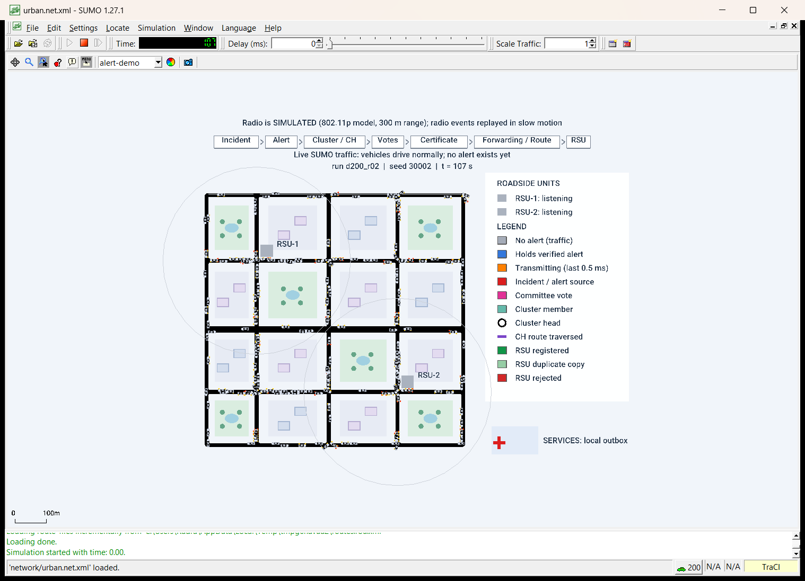
The image shows the live traffic at t = 107 s, 7 s before the incident: every vehicle is grey (no alert exists), both RSUs are listening and no stage of the indicator is active. SUMO simulates 200 vehicles on the project's small urban street grid in 1-second steps; the seed 30002 (= 10000 + 100 × 200 + 2) fixes the routes and every random choice, so the run is reproducible. Every second the dissemination engine's watchdog model, fed with SUMO's vehicle positions, updates each vehicle's reputation, trust = (s + 1)/(s + f + 2), from observed relaying successes s and failures f. 20 of the 200 vehicles are modelled as misbehaving; at the incident second all 180 honest vehicles have trust ≥ 0.7 and all misbehaving vehicles are below it. RSU-1 at (160, 590) m and RSU-2 at (610, 170) m each have a 300 m radio range.
Every later stage runs on this exact traffic state: positions, speeds and reputations at the incident second determine the neighbour tables, the clusters, the committee and the forwarding order. Before the replay the demonstration asserts that SUMO-GUI shows exactly the recorded vehicles (position difference below 0.05 m) and the recorded clusters.
At a random second between 60 and 120 s (here t = 114 s) one honest vehicle is designated as crashed, and the indicator activates its first stage.
Live SUMO traffic: vehicles drive normally; no alert exists yet; line 2: run d200_r02, seed 30002, t = 107 s; indicator: every box white.
scenario: run_id d200_r02, seed 30002, 200 vehicles (20 misbehaving, 180 with trust ≥ 0.7), two RSUs with vehicles_in_range 70 and 64.lead_in_s [100, 114], completed true (the position and cluster assertions passed).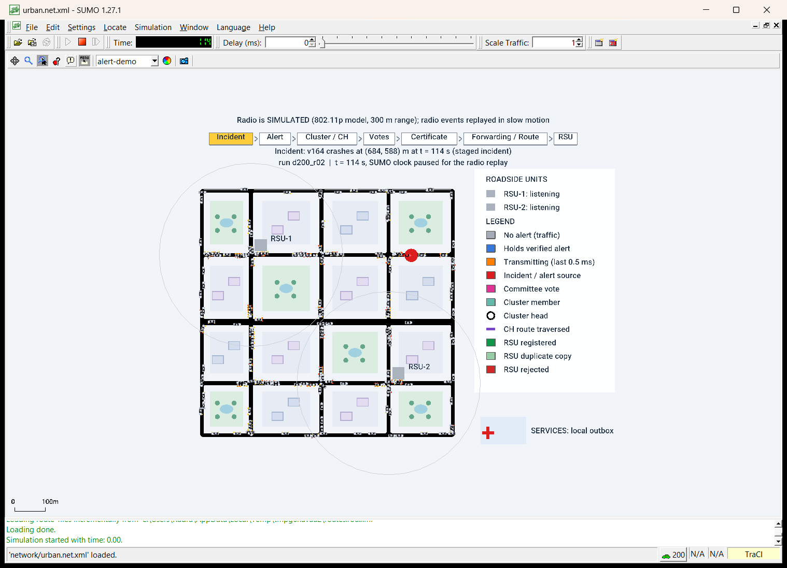
At t = 114 s vehicle v164, driving at 11.5 m/s on lane D3E3_1 at (683.67, 588.40) m, is designated as crashed. This is a staged incident: the simulation contains no crash detector. The vehicle turns red and a red disc marks the incident site; all other vehicles remain grey. SUMO's clock is paused from here until the replays end, because the radio events last only tens of milliseconds: the GUI is repainted without simulation steps, so no vehicle moves or is stopped artificially. The indicator highlights Incident (yellow); every other stage is still white.
The incident vehicle is the alert source. Every later decision (the committee, the distances that order the relays, the RSU registration) is taken relative to this vehicle and this second. Because the incident is staged on a recorded state, all schemes can be compared on exactly the same situation. v164 is an honest vehicle (trust 0.88); DBSCAN classifies it as isolated (role BRIDGE).
The incident vehicle immediately creates the alert (Stage 3).
Incident: v164 crashes at (684, 588) m at t = 114 s (staged incident).
scenario: source_id v164, incident_time_s 114, incident_xy (683.67, 588.40), incident_lane D3E3_1.v164 creates one DENM-like alert: event ID EVT-30002-v164-1 (seed, source and sequence number 1), type ACCIDENT, incident position (683.67, 588.40) m, incident and creation time 114 s, and a hop limit of 10. All of these fields later enter the signed digest, so none of them can be altered without invalidating the certificate. Nothing has been transmitted yet in this image. The indicator now shows Alert in yellow and Incident in light grey (occurred).
The event ID identifies the incident from end to end: vehicles use it to recognise copies they already hold, and the RSU registers each event ID only once. The hop limit bounds how far the alert can travel.
The clusters of this same second are shown first (Stage 4). Then the source proposes the alert to its committee in a signed PROPOSAL frame (on air 0.07 to 0.69 ms in the proposed-scheme replay), which opens the vote (Stage 5).
Alert EVT-30002-v164-1 created by v164: type ACCIDENT, hop limit 10.
scenario.alert: event_id EVT-30002-v164-1, message_type ACCIDENT, sequence_number 1, created_s 114, hop_limit 10.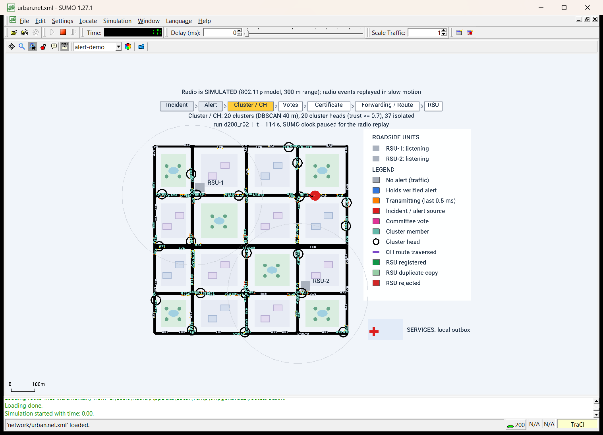
At the incident second DBSCAN groups the vehicles by position (ε = 40 m, MinPts = 3): 20 clusters, and 37 isolated vehicles (DBSCAN noise, role BRIDGE). Within each cluster, a greedy set cover over the 300 m radio disk elects cluster heads among the trusted members (trust ≥ 0.7). It repeatedly picks the member that covers the most still-uncovered members, breaking ties by the lowest mean speed difference to its neighbours. Here this gives 20 cluster heads, exactly one per cluster (the design notes that one 300 m radio disk usually covers a whole cluster formed with ε = 40 m), 143 members and 37 bridges. In the image, cluster members are teal and cluster heads carry black rings.
The roles set the forwarding priority. Tier 0 (a trusted cluster head or bridge) relays first; tier 1 (all others) waits one extra round of 5 slots × 5 ms = 25 ms. The cluster heads are also the only candidate nodes of the CH-to-CH route (Stage 7b).
The roles stay fixed for this dissemination. The replay of the dissemination begins, and the committee is asked to vote (Stage 5).
Cluster / CH: 20 clusters (DBSCAN 40 m), 20 cluster heads (trust >= 0.7), 37 isolated.
scenario.vehicles[].role: CH 20, MEMBER 143, BRIDGE 37; dbscan: 20 clusters, 37 labelled −1.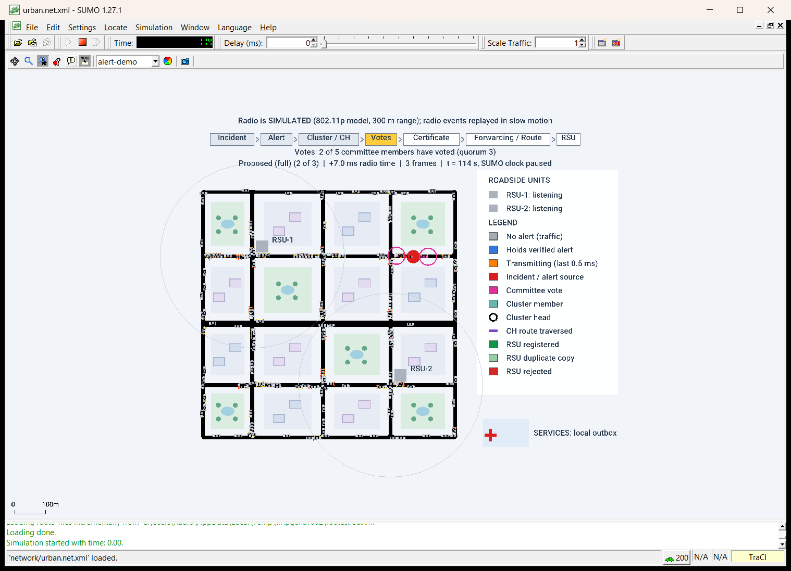
The committee is the 5 nearest in-range neighbours of v164 with trust ≥ 0.7: v156, v160, v142, v18, v197. Each member that observes the event (in the simulation, honest members observe the ground truth) verifies the proposal (4.3 ms) and signs (1.4 ms), then sends one 132-byte vote frame; the members are rank-ordered 0.5 ms apart. The vote frames start at v156 6.47, v160 6.98, v142 7.47, v18 7.98, v197 8.46 ms. At +7.0 ms (the image) 2 members, v156 and v160, have voted and are shown in pink. The source counts each distinct endorser once.
Corroboration requires at least 3 distinct reputable witnesses, so no single vehicle (and no misbehaving vehicle) can release an alert alone. The rule is fail-closed: if fewer than 3 reputable honest neighbours vote, the alert is never released.
The third distinct vote (v142, received when its frame ends at 7.75 ms) completes the quorum of 3. The source then charges 4.3 ms for verification, aggregates the signatures at 12.05 ms and puts the certified alert on air at 12.13 ms (Stage 6). The fourth and fifth votes (v18 and v197) arrive after the quorum and are not part of the certificate.
Votes: 2 of 5 committee members have voted (quorum 3); line 2: +7.0 ms radio time, 3 frames (the proposal and 2 votes).
protocols.proposed.corroboration: committee [v156, v160, v142, v18, v197], votes_counted [v156, v160, v142]; VOTE frames in transmissions.v164 aggregates its own signature and the 3 counted voters' signatures into one
96-byte BLS12-381 aggregate signature, attaches the 4 signer IDs (v164, v156, v160, v142) and
broadcasts the certified alert. In the image (+12.5 ms) the source is transmitting (orange ring): its alert frame
is on air from 12.13 to 12.78 ms. Every receiver verifies the certificate before accepting it: the
first signer must be the source, the signer IDs must be distinct, the aggregate signature must verify, and at least
3 endorsers must have trust ≥ 0.7. Verification is charged 4.3 ms before a copy counts as received. Here the
verdict is BLS aggregate valid, 3 of 3 endorsers counted
.
One compact certificate lets every receiver check both authenticity and corroboration without contacting the voters. The signed digest covers the event ID, type, source, sequence number, position, incident time, creation time and hop limit, so none of these can be changed in transit. The signatures prove who signed; the quorum of reputable endorsers is the corroboration (Section 1).
Each vehicle that accepts the certified copy schedules its forwarding decision (Stage 7).
Certificate: 4 BLS signatures in one 96 B aggregate; receivers verify it, then accept; line 2: +12.5 ms radio time, 7 frames (the proposal, five votes and the certified alert).
protocols.proposed.corroboration: certificate.signers [v164, v156, v160, v142], accepted true, reason BLS aggregate valid, 3 of 3 endorsers counted; metrics.quorum_ms 12.05.
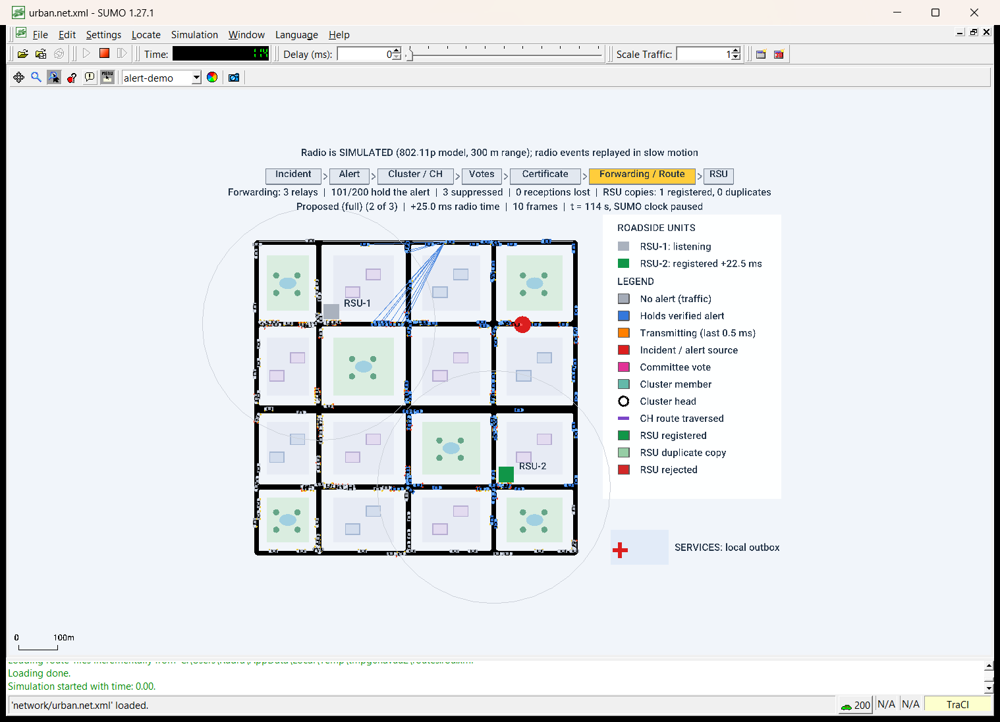
Each vehicle that accepted the alert waits T = taccept + (tier × 5 + S(d)) × 5 ms plus a random 0 to 5 ms, where the distance slot S(d) lets the farthest receivers go first. When its timer fires it forwards only if at least one of its neighbours (a vehicle or an RSU) is not within range of any vehicle it has already heard transmitting the alert; otherwise it suppresses. Misbehaving vehicles receive but never relay. At +25.0 ms (the image) 3 vehicles have relayed (v32 at 17.5 ms, v37 at 19.8 ms, v128 at 22.7 ms); 101 of 200 hold the alert and 3 have suppressed, with 0 receptions lost. RSU-2 has already registered the event (Stage 8).
Suppression keeps the channel usable: only a vehicle that can still reach someone new transmits. Over the whole replay 21 vehicles forwarded, 158 suppressed and 20 misbehaving vehicles dropped the alert. That makes 28 frames in total, and all 200 vehicles end up holding the verified alert. Counting RSUs as neighbours is what carries the alert to the infrastructure without a routing protocol.
Copies reach the RSUs: the first decodable copy is verified and registered, and later ones become duplicates (Stages 8 and 9). The same accident is also delivered along the CH-to-CH route (7b).
Forwarding: 3 relays | 101/200 hold the alert | 3 suppressed | 0 receptions lost | RSU copies: 1 registered, 0 duplicates; line 2: +25.0 ms radio time, 10 frames; RSU rows: RSU-1 listening, RSU-2 registered +22.5 ms.
protocols.proposed: decisions FORWARD 21, SUPPRESS 158, DROP 20; metrics: transmissions 28, received 200, suppression_ratio 0.88.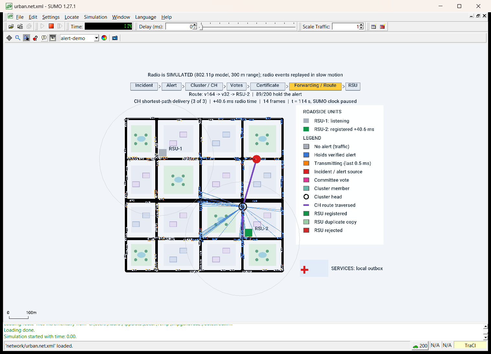
The alternative scheme forwards only along a planned route: Dijkstra over cluster heads with trust ≥ 0.7, from the source to the nearest RSU, here v164 → v32 → RSU-2 (428.6 m, 2 hops). Vehicles off the route stay silent. v32 (cluster head, trust 0.91) accepted the certified alert at 17.1 ms and then ran a local quorum. Its local proposal (CPROPOSAL) at 23.6 ms is where the indicator switches to Forwarding / Route, and members of its cluster (v21, v43, v45, v68, v73) answered with local votes (CVOTE) between 30.5 and 32.8 ms. Holding its own endorsement plus 2 local votes, and after verification, v32 relayed the alert (35.7 to 36.3 ms). RSU-2 decoded it at 36.3 ms and registered it at 40.6 ms. Purple lines mark the hops already traversed.
These local votes form v32's own quorum; they are separate from the source's committee vote (Stage 5) and are not counted in it. The route needs only 14 frames and loses 0 receptions, but only vehicles within range of v164 or v32 receive the alert (89 of 200). Registration also takes longer (+40.6 ms against +22.5 ms in 7a), because the head waits for its local quorum. There is no fallback if a head fails or loses its quorum.
This registration is the outcome shown on the final screen and written to the local dispatch outbox (Stage 11).
Route: v164 -> v32 -> RSU-2 | 89/200 hold the alert; line 2: +40.6 ms radio time, 14 frames; RSU-2 registered +40.6 ms.
infrastructure.route ROUTE_FOUND; transmissions CPROPOSAL:32, 5 × CVOTE, v32 ALERT; rsu_event arrival 36.335 ms, registration 40.638 ms, duplicate_copies 0; 77 vehicles SUPPRESS (outside the selected cluster-head route).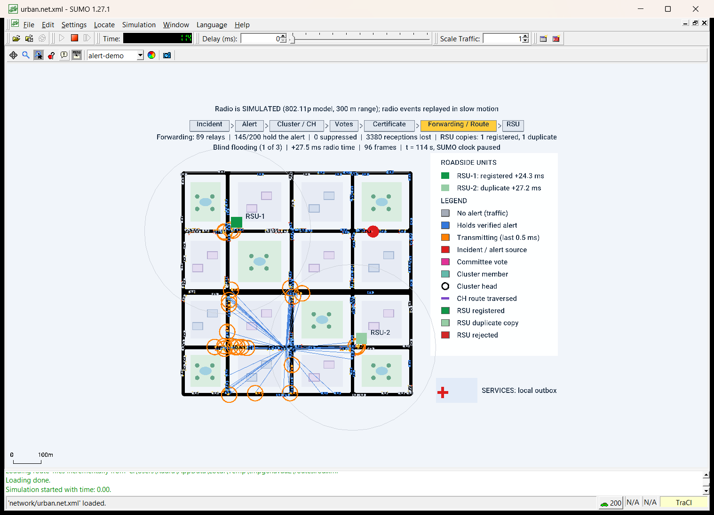
The demonstration replays the same accident first with blind flooding, the baseline without suppression. Every honest vehicle rebroadcasts once after verifying, whether or not its neighbours already hold the alert (misbehaving vehicles never relay). At +27.5 ms 89 vehicles have relayed, 145 of 200 hold the alert, 0 have suppressed and 3,380 receptions have been lost to collisions. RSU-1 registered the event at +24.3 ms (copy from v3, arrival +20.0 ms); RSU-2's first copy, from v78, was recorded as a DUPLICATE at +27.2 ms (light green).
This is the broadcast storm the proposed scheme avoids. Over the whole replay blind flooding put 182 frames on air and lost 9,971 receptions, and 196 of 200 vehicles received the alert; the proposed scheme (7a) used 28 frames, lost 138 receptions and reached all 200.
Whatever the scheme, a decoded copy reaches an RSU, which verifies and registers it (Stage 8).
Forwarding: 89 relays | 145/200 hold the alert | 0 suppressed | 3380 receptions lost | RSU copies: 1 registered, 1 duplicate; line 2: +27.5 ms radio time, 96 frames; RSU rows: RSU-1 registered +24.3 ms, RSU-2 duplicate +27.2 ms.
protocols.flooding: decisions FORWARD 175, DROP 20; metrics: transmissions 182, collision_losses 9,971, received 196, suppression_ratio 0.00.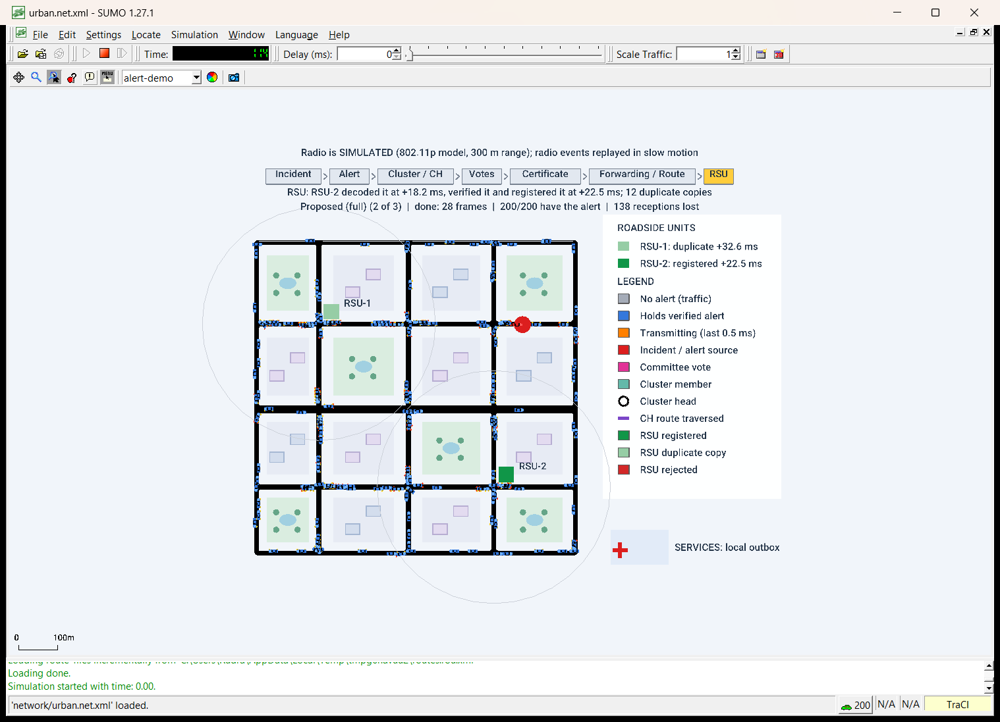
In the proposed scheme RSU-2 decoded its first copy, relayed by v32, at +18.2 ms (its arrival time). It verified the certificate (4.3 ms) and ran the plausibility checks on its own clock: required fields, message type, a position inside the road network's bounding box, not received before its creation, an age of at most 600 s, a hop count within the hop limit, and the certificate (signatures and quorum). It then registered event EVT-30002-v164-1 at +22.5 ms, with the status REGISTERED; registration time = arrival + verification. This snapshot was taken after the replay had finished, at +80.9 ms, the time of the last recorded event (a suppression decision by v38). The indicator therefore shows RSU and line 1 summarises the outcome.
The RSU is the hand-over point to the emergency services. Registering each event ID once prevents duplicate dispatches, and reporting arrival and registration separately shows the cost of verification. Every copy's outcome is recorded as REGISTERED, DUPLICATE or REJECTED (with the reason).
Further copies of the same event keep reaching the RSUs and are counted as duplicates (Stage 9).
RSU: RSU-2 decoded it at +18.2 ms, verified it and registered it at +22.5 ms; 12 duplicate copies; line 2: done: 28 frames, 200/200 have the alert, 138 receptions lost; RSU rows: RSU-1 duplicate +32.6 ms, RSU-2 registered +22.5 ms.
protocols.proposed.rsu_event: receiving_rsu RSU-2, received_from v32, hops 2, arrival_ms 18.174, delay_ms (registration) 22.477, status REGISTERED, validation PASSED, duplicate_copies 12.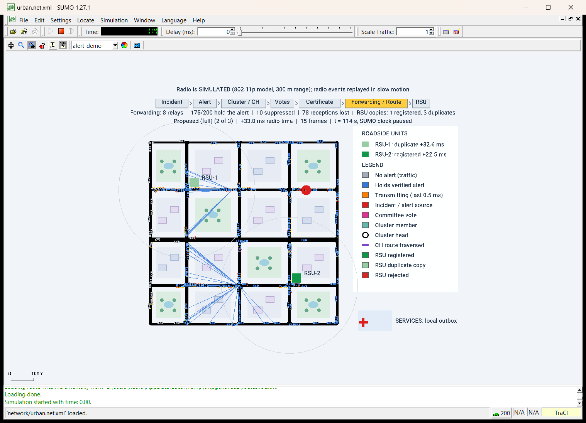
In the proposed scheme RSU-2 registered the event at +22.5 ms (Stage 8). RSU-1 decoded its first copy, relayed by v86, at +28.3 ms; after the same 4.3 ms check it was recorded as a DUPLICATE at +32.6 ms, because event EVT-30002-v164-1 was already registered. The image (+33.0 ms) shows that outcome: RSU-1 in light green beside RSU-2 in dark green. Line 1 counts the RSU outcomes so far: 1 registered and 3 duplicate copies (2 at RSU-2, 1 at RSU-1). Vehicles treat repeated copies the same way: a copy of an alert already held is never processed again; it is counted and its sender is added to the vehicle's coverage set. By this moment 10 vehicles have suppressed their rebroadcast because every neighbour was already covered.
Duplicates must never become a second accident or a second dispatch. Each RSU registers an event ID once and records every later copy as DUPLICATE, and every copy's outcome is kept in the record. Over the whole replay the RSUs recorded 12 duplicate copies (6 at RSU-2, 6 at RSU-1), and vehicles decoded 911 duplicate copies, none re-processed. On the vehicle side duplicates are what the coverage test feeds on; blind flooding, which ignores them, produced the storm of 7c.
After the three genuine schemes, the demonstration replays a forged alert on the same traffic (Stage 10).
Forwarding: 8 relays | 175/200 hold the alert | 10 suppressed | 78 receptions lost | RSU copies: 1 registered, 3 duplicates; RSU rows: RSU-1 duplicate +32.6 ms, RSU-2 registered +22.5 ms.
protocols.proposed.rsu_receptions[].status: RSU-2 REGISTERED 1 and DUPLICATE 6, RSU-1 DUPLICATE 6; rsu_event.duplicate_copies 12; metrics.dup_rx 911.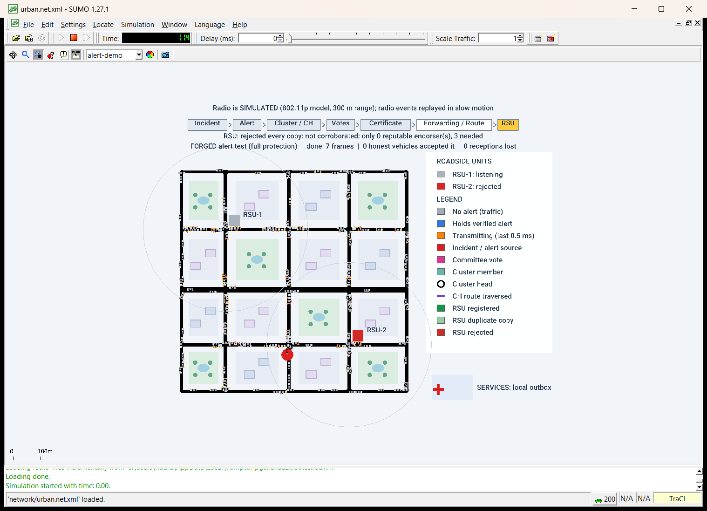
A misbehaving vehicle, v34 (trust 0.009), claims an accident that did not happen at
(385, 133) m (event EVT-30002-v34-1). Its committee, the 5 nearest
reputable neighbours (v139, v77, v78, v114, v76; trust 0.84–0.92), observes no accident and stays silent; instead
5 colluding misbehaving vehicles (v148, v39, v107, v195, v16; trust 0.009–0.011) vote. The forger counts
3 distinct votes and broadcasts a certificate with 4 valid BLS signatures (v34, v148, v39, v107)
at 12.2 to 12.8 ms. Every receiver finds the signatures valid but rejects the alert:
only 0 reputable endorser(s), 3 needed
(73 rejections, 0 honest acceptances). RSU-2 decoded a copy at
+12.8 ms and rejected it at +17.1 ms. Nobody accepted, so nobody forwarded: the Forwarding / Route
box stays white.
A valid signature is not evidence of an accident; the reputation gate on the endorsers stops the forgery. In
the same run, without that gate (record variant voting_only), the same certificate was accepted by
180 honest vehicles and RSU-2 reported REGISTERED; without voting (no_voting) the
outcome was the same (180 honest vehicles, REGISTERED). The protection therefore depends on the
colluders' low reputation (Section 3).
The replays are over, and SUMO's clock resumes (Stage 11).
RSU: rejected every copy: not corroborated: only 0 reputable endorser(s), 3 needed; line 2: FORGED alert test (full protection), done: 7 frames, 0 honest vehicles accepted it, 0 receptions lost; RSU-2 row red, rejected.
forgery.variants.voting_reputation: accepted false; 73 decisions REJECT; RSU-2 status REJECTED: not corroborated: only 0 reputable endorser(s), 3 needed. Indicator: Votes and Certificate light grey, Forwarding / Route white, RSU yellow.
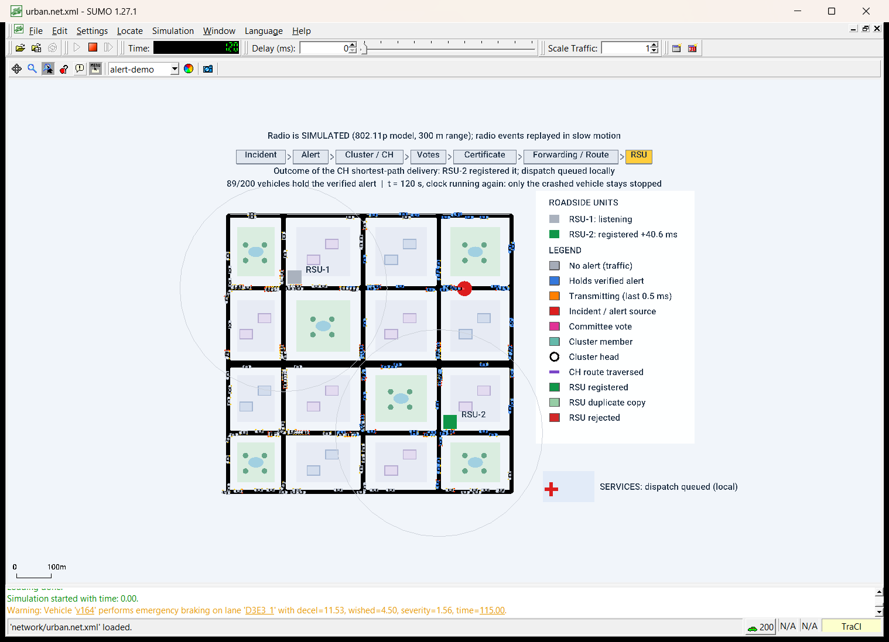
After the replays SUMO's clock resumes; the image is taken 6 simulation steps later, at t = 120 s. The crashed vehicle v164 stops (deliberately abruptly). Every other vehicle continues at its own speed and reacts to the obstacle through SUMO's car-following model. The overlay now shows one recorded dissemination: the CH-to-CH route delivery of Stage 7b, which is the one the run writes to the infrastructure layer. 89 of 200 vehicles hold the verified alert (blue). RSU-2 registered it at +40.6 ms, and the dispatch is queued in a local SQLite outbox with no cloud connection. RSU-1 received no copy on this route and still shows listening.
This closes the loop from a staged incident to a registered, dispatch-ready event. It also shows that the replay did not disturb the traffic simulation: the clock was paused, and apart from the crashed vehicle no vehicle was stopped artificially.
The workflow ends here. The event waits in the local outbox; no real emergency service is contacted (README: no live emergency dispatch is enabled by default).
Outcome of the CH shortest-path delivery: RSU-2 registered it; dispatch queued locally; line 2: 89/200 vehicles hold the verified alert, t = 120 s; RSU-2 registered +40.6 ms; services: dispatch queued (local); indicator: RSU yellow, all others light grey.
infrastructure.backhaul: LOCAL_SQLITE, QUEUED_LOCAL, cloud NOT_CONNECTED; tracked outbox results/urban/infrastructure/backhaul.sqlite3: EVT-30002-v164-1 QUEUED_LOCAL.sumo_log: a single warning, the emergency braking of the crashed vehicle v164 (SUMO time 115.00 s); no other vehicle produced a warning.Simulation results from one run (d200_r02, seed 30002, 200 vehicles): the same accident on the
same traffic state under each scheme. These are outputs of the simulated radio model for this seed, not real-world radio
measurements. Multi-seed statistics (30 seeds per density, 95 % confidence intervals and paired differences) are produced
by python run.py experiment in results/urban/summaries/RESULTS.md and are not restated here.
| Measure (from the run record) | Blind flooding | Proposed | CH-to-CH route |
|---|---|---|---|
| Frames on air (proposal, votes and alert frames) | 182 | 28 | 14 |
| Receptions lost to collisions | 9,971 | 138 | 0 |
| Vehicles holding the verified alert | 196 / 200 | 200 / 200 | 89 / 200 |
| Time until 90 % of vehicles hold it | 27.9 ms | 38.0 ms | not reached |
| Suppression ratio (honest relay decisions that suppressed) | 0.00 | 0.88 | 0.99 |
| First RSU registration (arrival + 4.3 ms) | RSU-1 +24.3 ms | RSU-2 +22.5 ms | RSU-2 +40.6 ms |
| Duplicate copies decoded at RSUs | 9 | 12 | 0 |
On this accident the proposed scheme used 28 frames instead of 182 and lost 138 receptions instead of 9,971, while all 200 vehicles received the alert (blind flooding: 196). Blind flooding reached 90 % of the vehicles sooner (27.9 ms against 38.0 ms), because every honest vehicle rebroadcasts as soon as it has verified the alert, whereas the proposed scheme's slotted timers trade some milliseconds for a much lighter channel load. The CH-to-CH route used the fewest frames but reached only 89 vehicles and registered latest. In the forged-alert test on the same traffic, full protection let 0 honest vehicles accept the forgery and RSU-2 rejected it; without the reputation gate 180 honest vehicles accepted it and RSU-2 registered it.
rsu.register_reports, which can merge valid reports of
the same crash (separate alerts about it) into one incident, but the simulation emits one report per crash and does not
call it: the function is exercised by unit tests only (validation/test_rsu.py), is not shown in the SUMO replay and is
not reflected in the run results above or in the experiment metrics. It matches the event ID first (an event ID already
registered is the same report, and its copies count as duplicates unless they fail the existing checks); otherwise a
report joins an incident only if it has the same message type
and its incident position and time are within 10 m and 2 s of every
report already in that incident. Each report is still validated on its own by the existing checks, and a rejected report
is never merged; certificates, endorsements and quorum decisions are never combined. The incident keeps its valid source
reports and the distinct reporting vehicle IDs, and it is registered once: neither duplicates nor merged reports add a
registration. Limits: distinct crashes within these bounds are merged into one incident, reports of one crash outside
them stay separate, and a report that matches several incidents joins the first registered one.SUMO supplies the traffic: 200 vehicles on an urban grid. From their positions the dissemination engine's watchdog model builds each vehicle's reputation second by second. At t = 114 s vehicle v164 is designated as crashed and creates alert EVT-30002-v164-1. On that exact state the engine clusters the vehicles and elects 20 cluster heads. It collects votes from the source's committee until 3 distinct reputable members have endorsed the alert, and aggregates their BLS signatures with the source's into one 96-byte aggregate signature, which the certificate carries together with the signer IDs. It then disseminates the certified alert, in the proposed scheme with prioritised, coverage-based suppression (28 frames, all 200 vehicles reached) and along the CH-to-CH route through v32 to RSU-2. The RSUs verify each copy, register the event once and count later copies as duplicates. A forged alert with valid signatures but no reputable endorsers is rejected by every receiver and by the RSU. When the clock resumes, the registered CH-route delivery sits in the local dispatch outbox, and the traffic continues around the stopped vehicle.
Indicator colours. yellow = the current stage; light grey = a stage that has occurred; white = a stage that has not occurred (yet), including a stage that was skipped.
It claims, for this simulated run: that the alert was released only after 3 distinct reputable endorsements; that every receiver and RSU checked who signed it and that it was not altered; that coverage-based suppression delivered it to all 200 vehicles and to an RSU with 28 frames and 138 lost receptions, against 182 frames and 9,971 lost receptions for blind flooding on the same accident; and that an alert endorsed only by low-reputation vehicles was rejected.
It does not claim that a registered event is a true accident (only corroborated and plausible); that the results hold on real radios (the channel is a model without fading or capture); that one run represents all traffic conditions (see the multi-seed results); that the reputation would detect attackers who behave well while watched; that genuine alerts are always delivered (the scheme is fail-closed when fewer than 3 reputable voters are in range); or that any emergency service is contacted (the dispatch is a local outbox only).
Final verified demonstration. Run d200_r02 (seed 30002, event EVT-30002-v164-1), recorded with
python run.py demo --shots portal/assets/sumo on SUMO-GUI 1.27.1. The thirteen snapshots were captured on
2026-11-04 00:47:08; each is a pixel copy of the SUMO-GUI window only (Windows PrintWindow). They are listed in the manifest
portal/assets/sumo/snapshots.json, with identical copies in documentation_website/portal/assets/sumo/. The demo writes its
own run evidence into that manifest, so it is kept with the snapshots: completed = true (every stage ran and
every replay consistency check passed), the SUMO log (sumo_log, 1
line), the live-traffic window (lead_in_s) and a SHA-256 fingerprint of
the record it replayed (record_fingerprint, 397f81ab56d10051…).
Checks made by the script that builds this document (docs/workflow_pdf/build_workflow_pdf.py), before any text is written: the run must be marked completed; the manifest's fingerprint must equal the fingerprint of the record file results/urban/raw/d200_r02.json.gz (for the final demonstration the demo re-simulated the seed into a separate scratch results folder and obtained a record with exactly this fingerprint); for every snapshot, the indicator stage and status line 1 must equal what that record gives at the snapshot's radio time, the run ID must match, and the SUMO time must be the incident second (Figures 2 to 12), lie in the recorded lead-in (Figure 1) or follow the incident (Figure 13); and the outbox results/urban/infrastructure/backhaul.sqlite3 must hold the dispatch row. Run-specific numbers (counts, times, identifiers) are read from the record and design parameters from config.py; the SUMO version, the 0.05 m assertion tolerance and the audit figures in Section 3 come from the cited sources.
Version-control status. The record file and the outbox above were last written on 3 November 2026, and the snapshots and this document were produced on 4 November 2026. All of them are in the project's working tree but not yet committed to git; the committed copy of the record dates from 27 October 2026 and differs from it. They become permanent in version control once the project owner commits them.
| Figure | Snapshot file | Indicator stage | Scheme replayed | SUMO time | Radio time |
|---|---|---|---|---|---|
| Figure 1 | sumo_01_traffic.png | Live traffic | – | 107 s | – |
| Figure 2 | sumo_02_incident.png | Incident | – | 114 s | – |
| Figure 3 | sumo_03_alert.png | Alert | – | 114 s | – |
| Figure 4 | sumo_04_clusters.png | Cluster / CH | – | 114 s | – |
| Figure 5 | sumo_05_votes.png | Votes | Proposed (full) | 114 s | +7.0 ms |
| Figure 6 | sumo_06_certificate.png | Certificate | Proposed (full) | 114 s | +12.5 ms |
| Figure 7 | sumo_08_forwarding.png | Forwarding / Route | Proposed (full) | 114 s | +25.0 ms |
| Figure 8 | sumo_11_route.png | Forwarding / Route | CH shortest-path delivery | 114 s | +40.6 ms |
| Figure 9 | sumo_07_flooding.png | Forwarding / Route | Blind flooding | 114 s | +27.5 ms |
| Figure 10 | sumo_10_rsu.png | RSU | Proposed (full) | 114 s | +80.9 ms |
| Figure 11 | sumo_09_duplicates.png | Forwarding / Route | Proposed (full) | 114 s | +33.0 ms |
| Figure 12 | sumo_12_forged.png | RSU | FORGED ALERT | Voting + BLS + reputation (full) | 114 s | +17.1 ms |
| Figure 13 | sumo_13_final.png | RSU | CH shortest-path delivery | 120 s | – |
Documents used. docs/SYSTEM_DESIGN.md (rules, parameters, limitations), docs/AUDIT.md (confirmed limitations and the demonstration fixes V1 to V9), README.md (demo behaviour and scope), and the documentation portal's SUMO Demonstration text (portal/app.js). The Panel Review deck was not used: it describes an architecture that no longer exists (docs/AUDIT.md §4).